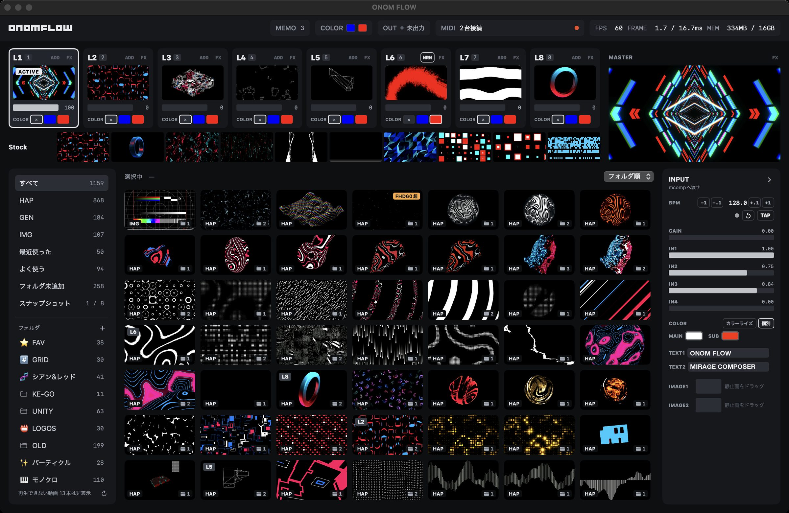
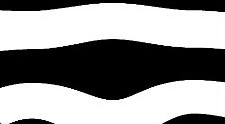
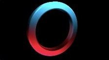
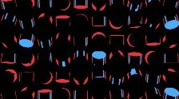
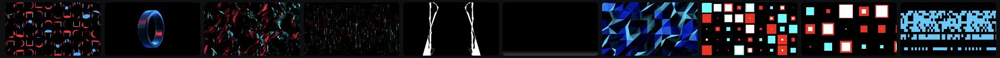
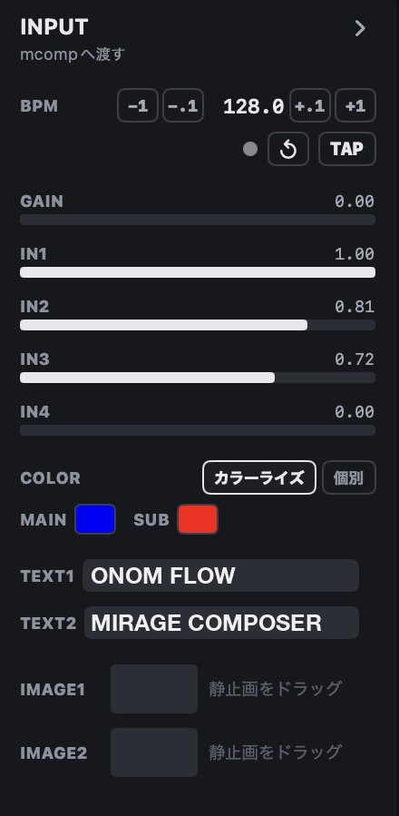
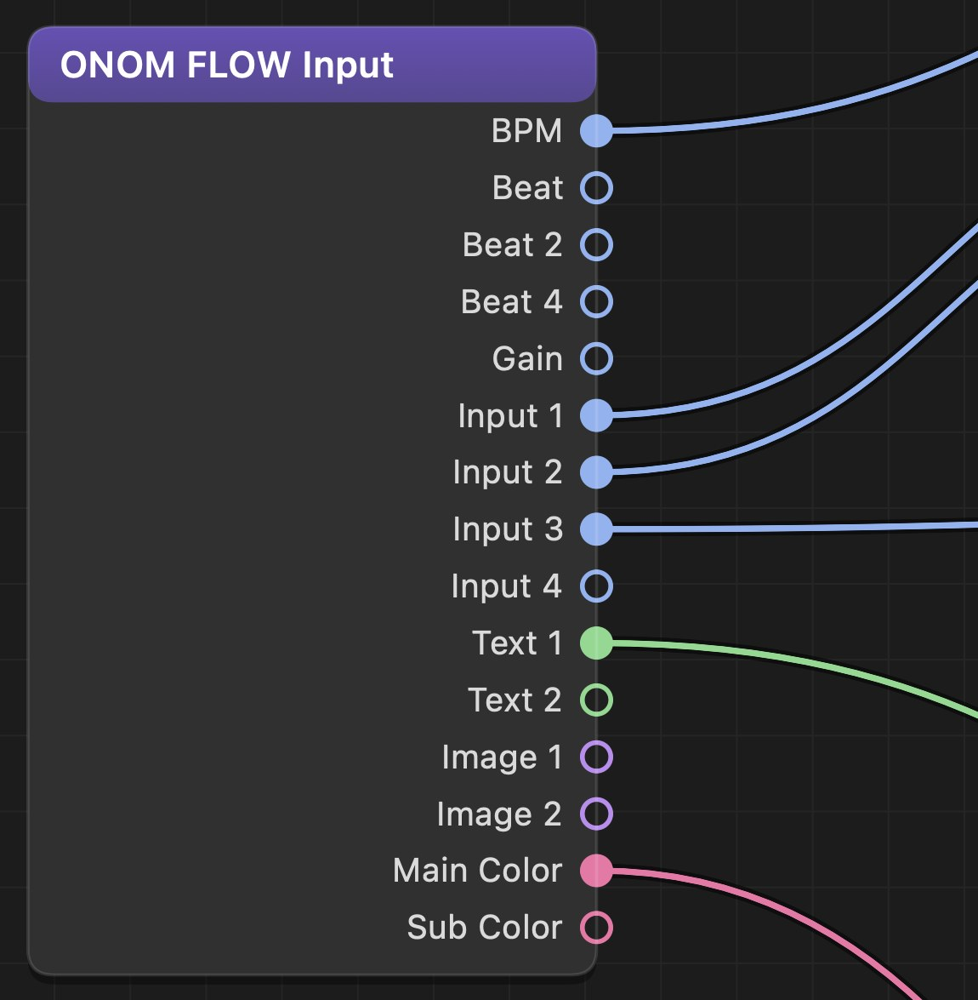

ONOM FLOW
シンプルで、実用的。
現場で培ったノウハウを詰め込んだ、Mac専用のVJアプリ。
Simple and practical.
A VJ app for Mac, packed with know-how from real gigs.

多機能より、
迷わず触れること
Less to learn.
Nothing to hunt for.
自分の VJ スタイルに合わせて、機能を選び抜いたシンプルな VJ ツールです。多機能さよりも「迷わず触れること」を大切にしながら、カラーライズ、レイヤーキュー、ストック、ノブエフェクトなど、現場で効く実用的な機能をそろえました。
A simple VJ tool whose features were chosen to fit one VJ's way of playing. It puts being able to reach for things without thinking ahead of having every feature, and brings practical tools that work on the night: colorize, the Layer Queue, the stock and knob effects.
次の映像を、
先に仕込んでおける
Line up the next clip
before you need it
出ているレイヤーに素材を選んでも、すぐには切り替わりません。その素材はレイヤーキューで待ち、alpha（不透明度）が0になった瞬間に差し替わります。一瞬の判断が求められる現場でも、次の映像を落ち着いて用意できます。
Pick a clip for a layer that's showing and it won't cut in. It waits in the Layer Queue and swaps in the moment the layer's alpha (opacity) reaches zero, so you can get the next clip ready calmly, even when the room needs a split-second call.
- 送出中の映像がいきなり切り替わる、操作ミスを防ぐ
- 待っている素材はプレビューの右下に小さく出て、「今」と「次」を一度に見られる
- 待っている間に選び直せば入れ替わり、右クリックで取り消しも
- レイヤーごとに、別々に待てる
- No more accidental cuts on the clip that's on air
- The waiting clip shows small in the corner of the preview, so you see “now” and “next” at once
- Pick again to replace it, or right-click to cancel
- Each layer queues on its own
レイヤーキューは、設定の「プレビュー」で「素材を選んだらすぐレイヤーに入れる」を切ると使えます。
To use the Layer Queue, turn off “load clips into the layer right away” in the Preview tab of Settings.

今NOW
次NEXT明暗はそのまま、
色だけを置き換える
Keep the light and shade.
Swap the color.
映像の明暗を保ったまま、単色に置き換えます。多くの VJ が自前で用意している定番の処理を、はじめから使える形で入れました。メインとサブの2色をレイヤーごとに割り当て、メインの色を変えれば、割り当てた全レイヤーが一斉に変わります。
Turn any clip into a single color while keeping its light and shade — the staple effect many VJs build for themselves, ready from the start. Assign a main or sub color to each layer, then change the main color and every layer using it follows at once.
- 色は7色＋白。Launchpad などのボタンから素早く選べる
- 統一感を保ったまま、展開に合わせて色を組み替えられる
- 色の切り替えは即座に（フェードなし）
- Seven colors plus white, quick to pick from a Launchpad or any pad
- Rework the palette to match the moment, while everything stays cohesive
- Color changes are instant — no fade

色を押すと、そのロールのレイヤーが一斉に変わります（ページ上での再現です）
Press a color and every layer with that role changes at once (a simulation in your browser).
ノブ1つで、
エフェクトを選ぶ
One knob,
many effects
DJ ミキサーのエフェクト選択ノブのように、ノブの位置でかかるエフェクトが切り替わります。かけたいエフェクトが増えても、ボタンを増やさずに済みます。
Like the FX selector on a DJ mixer, the knob's position decides which effect is on. Add more effects without adding more buttons.
- ノブを合わせた時点で、そのエフェクトがかかる
- 一番左はエフェクトなし
- 1つのノブに7つまで並べられ、レイヤーごとにノブを2つ使える
- 内蔵の16本に加えて、ISF で増やせる
- The effect kicks in as soon as the knob lands on it
- All the way left is no effect
- Up to seven effects per knob, with two knobs per layer
- Sixteen built-in effects, and more with ISF
スライダーを動かしてみてください（ページ上での再現です）
Move the slider to try it (a simulation in your browser).
もうすぐ使う素材を、
見える場所に
Keep what's coming up
where you can see it
今はレイヤーに入れないけれど、もうすぐ使いそうな素材を、いつも見える位置に置いておけます。クリックひとつで、選んでいるレイヤーへ送れます。
Park clips you'll want soon — not on a layer yet — where they're always in view. One click sends any of them to the selected layer.
- アクティブなレイヤーが無いときに選んだ素材は、自動でストックへ
- 10個を超えると、古いものから押し出される
- 「こんな展開が来そう」な素材や、必ずかける曲の MV、ロゴの置き場に
- Clips you pick with no active layer go straight to the stock
- Past ten, the oldest one drops off
- Handy for clips you sense are coming, the music video you'll always play, or your logos

8列のコントローラーで、
8つのレイヤーを
Eight channel strips,
eight layers
Novation Launch Control XL シリーズや Akai APC シリーズのような、ノブ・フェーダー・ボタンが8列並ぶコントローラーと相性抜群。1列を1レイヤーに、MIDI Learn で割り当てるだけです。
A natural fit for controllers with eight strips of knobs, faders and buttons, like the Novation Launch Control XL and Akai APC series. One strip per layer, mapped with MIDI Learn.
- エフェクトのオン・オフもパラメータも割り当てられる
- ノブエフェクトで、ノブ1つにエフェクトをまとめられる
- Map effect toggles and parameters too
- Put a whole set of effects on one knob with knob effects
BPMも色も文字も、
ジェネ素材へ
BPM, colors and text,
straight into generative clips
Mirage Composer で作った作品を、そのままジェネ素材として描きます。タップしたBPMや拍、色、文字が作品へ届きます。作品の側では、ONOM FLOW Input パッチを1つ置くだけで、まとめて受け取れます。
Compositions from Mirage Composer play as generative clips, and receive your tapped BPM, beat, colors and text. In the composition, a single ONOM FLOW Input patch picks them all up.


はじめかたは3ステップ
Three steps to start
- 素材を入れる書類フォルダの「ONOMFLOW」に入れるか、ウィンドウへドラッグ。はじめはサンプルのジェネ素材も入っています。
- レイヤーを選んで、素材をクリック選んだ素材が、そのレイヤーに入ります。
- フェーダーで出すalpha を上げると映像が出ます。下げれば消え、ほかのレイヤーと重ねて混ぜられます。
- Add your clipsPut them in the “ONOMFLOW” folder in Documents, or drag them onto the window. Sample generative clips are there to start with.
- Select a layer, click a clipThe clip goes straight to that layer.
- Bring it in with a faderRaise alpha to show it, pull it down to hide it, and blend it with the other layers.
コントローラーが無くても、マウスだけで始められます。素材が無ければ、無料の Mirage Composer のデモを素材フォルダに保存すれば、ジェネ素材として使えます。
No controller? A mouse is enough to start. No footage yet? Save a demo from the free Mirage Composer into your media folder and play it as a generative clip.
素材は HAP がおすすめ
HAP is the way to go
H.264 や ProRes もそのまま再生できますが、HAP にすると切り替えが速く、8レイヤーでも負荷が安定します。無料のツールでまとめて変換できます。
H.264 and ProRes play as they are, but HAP switches faster and stays light across eight layers. Free tools convert whole folders at once.
- Shutter Encoder無料。ファイルを落として「HAP」を選び、まとめて書き出し。
- SynapseRack Media Encoder無料。HAP へのまとめ変換に絞ったエンコーダー。
- ffmpeg
ffmpeg -i in.mp4 -c:v hap out.mov
- Shutter EncoderFree. Drop files in, pick “HAP” and batch export.
- SynapseRack Media EncoderFree. A batch encoder built for converting to HAP.
- ffmpeg
ffmpeg -i in.mp4 -c:v hap out.mov
ふだんは HAP、透過が要るときは HAP Alpha、画質を上げたいときは HAP Q。1920×1080・60fpsまで、音は要りません。
Use HAP for most clips, HAP Alpha for transparency and HAP Q for higher quality. Up to 1920×1080 at 60 fps; no audio needed.
よくある質問
Questions
どのくらいの負荷で動きますか？
MacBook Air（M4・16GB）で計測した条件では、フルHDのHAP素材8レイヤーを60fps、遅れたフレームなしで再生できました（GPU平均2.7ms）。8レイヤーそれぞれにエフェクトを2つずつかけても平均10ms ほどで、1フレームの予算（16.7ms）に収まります。素材やエフェクトの組み合わせによって変わります。
Windows や Intel の Mac で使えますか？
使えません。Apple シリコン搭載の Mac 専用です。
出力は何画面に出せますか？
1つです。つないだディスプレイかプロジェクター1台に全面で出すか、このMacの画面にウィンドウで出します。
Syphon や NDI は使えますか？
今は使えません。
音に反応しますか？
音を解析する機能は今はありません。BPM をタップで合わせると、拍に合わせて Mirage Composer のジェネ素材を動かせます。
どんな合成ができますか？
レイヤーごとに、加算・通常・乗算から選べます。
どんな ISF でも動きますか？
ISF 2.0 に対応しています。ただし音声を入力にする ISF（audio・audioFFT）には値が渡りません。パスの多い重い ISF は、8レイヤーにかけると処理が追いつかないことがあります。
画面は英語にできますか？
できます。Mac の言語に合わせて、日本語か英語で表示します。
How much can it handle?
In our tests on a MacBook Air (M4, 16 GB), eight layers of 1080p HAP played at 60 fps with no late frames (GPU 2.7 ms on average). With two effects on each of the eight layers it averaged about 10 ms, within the 16.7 ms frame budget. Results vary with your clips and effects.
Does it run on Windows or Intel Macs?
No. It's for Macs with Apple silicon only.
How many outputs?
One: full screen on a single display or projector, or a window on your Mac.
Syphon or NDI?
Not at the moment.
Does it react to audio?
There's no audio analysis yet. Tap in the BPM and Mirage Composer clips can move with the beat.
Which blend modes?
Add, Normal and Multiply, chosen per layer.
Will any ISF work?
ISF 2.0 is supported. ISFs that take audio input (audio, audioFFT) receive no values, and heavy multi-pass ISFs may not keep up across eight layers.
Is the interface available in English?
Yes. It follows your Mac's language: Japanese on a Mac set to Japanese, English otherwise.
用語
Terms
- alpha
- 不透明度。0で見えなくなり、上げるほど濃く出ます。
- HAP
- VJ向けの動画の形式。どのコマからでもすぐ読めるので、切り替えが速く負荷も軽い。
- ISF
- 映像エフェクトを書くための共通の形式。VDMX などでも使われています。
- ジェネ素材
- ファイルを再生するのではなく、その場で描く映像。Mirage Composer の作品や ISF のジェネレーター。
- MIDI Learn
- 割り当てたい操作を選んで、コントローラーのノブやボタンを動かすだけで割り当てる方法。
- alpha
- Opacity. At zero the layer is invisible; raise it to bring the layer in.
- HAP
- A video format made for VJing. Every frame can be read on its own, so switching is fast and light.
- ISF
- A shared format for writing visual effects, also used by VDMX and others.
- Generative clip
- Visuals drawn live rather than played from a file — Mirage Composer compositions and ISF generators.
- MIDI Learn
- Select an action, then move a knob or press a button on your controller to map it.
無料で4レイヤー。
5,000円の買い切りで8レイヤー。
Four layers free.
Eight for ¥5,000, once.
無料版も期限なしで、すべての機能が使えます。4レイヤーあれば、はじめてのVJには十分。足りなくなったら、5,000円の買い切りで8レイヤーに。サブスクはありません。
The free version has every feature and never expires. Four layers are plenty when you're starting out. When you need more, unlock eight with a single ¥5,000 purchase — no subscription.
価格は日本での税込です。日本以外の国では、App Store のその国の価格になります。
Price in Japan, tax included. Other countries use the App Store's local price.
動作環境
Requirements
- OS
- macOS 15 Sequoia 以降
- Mac
- Apple シリコン搭載の Mac
- 素材
- HAP（推奨）、H.264・HEVC・ProRes、JPEG・PNG、ISF、Mirage Composer の .mcomp
- MIDI
- macOS で認識できるコントローラー
- 運用実績
- MacBook Air M4（16GB）・1080p 出力で現場を回しています
- 言語
- 日本語・英語（Mac の言語に合わせます）
- OS
- macOS 15 Sequoia or later
- Mac
- A Mac with Apple silicon
- Media
- HAP (recommended), H.264, HEVC, ProRes, JPEG, PNG, ISF and Mirage Composer .mcomp
- MIDI
- Any controller macOS recognizes
- Used live on
- MacBook Air M4 (16 GB), 1080p output
- Language
- English and Japanese (follows your Mac’s language)
更新履歴
What's New
1.1
- 素材フォルダをいくつでも足せるようになりました。設定の「素材」タブで、足す・外すができます。
- 素材フォルダに入れた ISF のジェネ素材（画像の入力を持たない ISF）も、素材一覧の GEN に並ぶようになりました。
- 「ISFフォルダ」は「エフェクトフォルダ」になり、エフェクトだけを読むようになりました。
- 素材を選ぶと、すぐレイヤーに入るのが標準になりました。alpha が 0 になるまで待つ動きに戻したいときは、設定の「プレビュー」で切り替えられます。
- MASTER のプレビュー（出力モニター）の更新頻度を、60・30・15fps から選べるようになりました。外部出力は常に 60fps です。
- サンプルのジェネ素材（preset）を更新しました。
- You can now add as many media folders as you like, and add or remove them in the Media tab of Settings.
- ISF generative clips (ISFs without an image input) in your media folders now appear under GEN in the clip list.
- "ISF Folders" are now "Effect Folders" and load effects only.
- Choosing a clip now loads it into the layer right away by default. To wait until the layer's alpha reaches zero instead, change it in the Preview tab of Settings.
- The MASTER preview (output monitor) can now update at 60, 30 or 15 fps. External output always runs at 60 fps.
- Updated the sample generative clips (preset).
1.0
- 最初のリリース。
- First release.